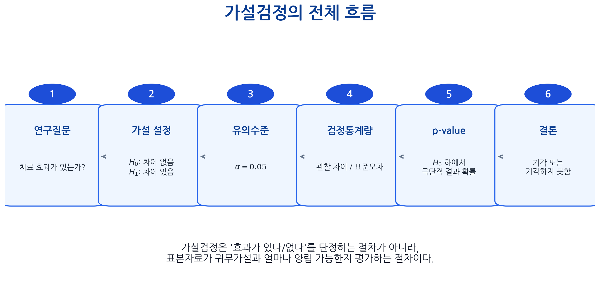
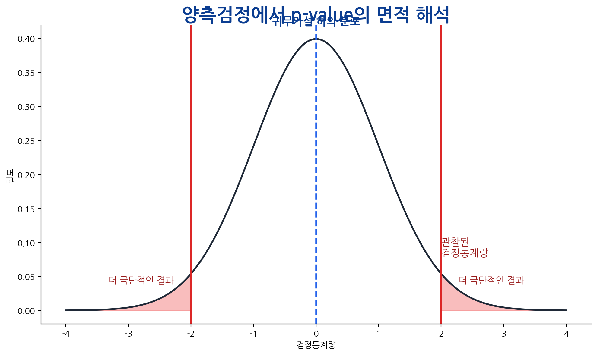
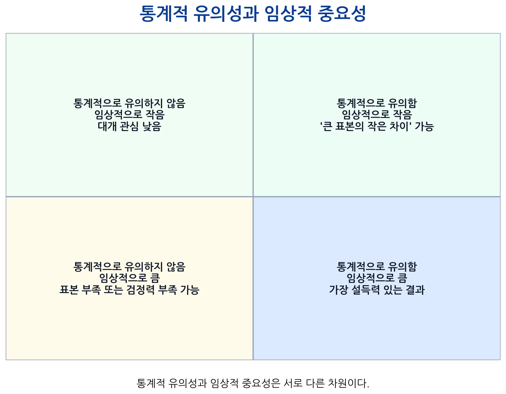
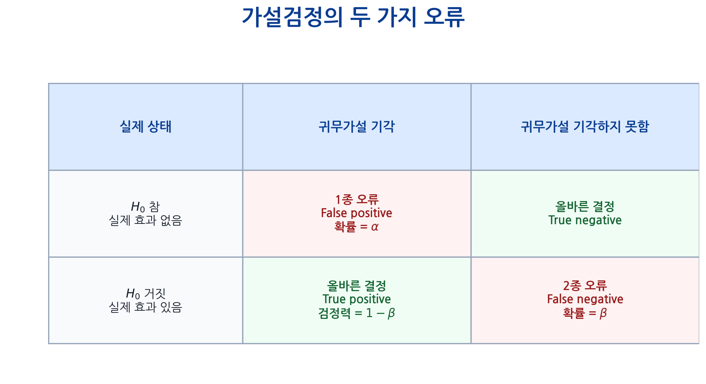
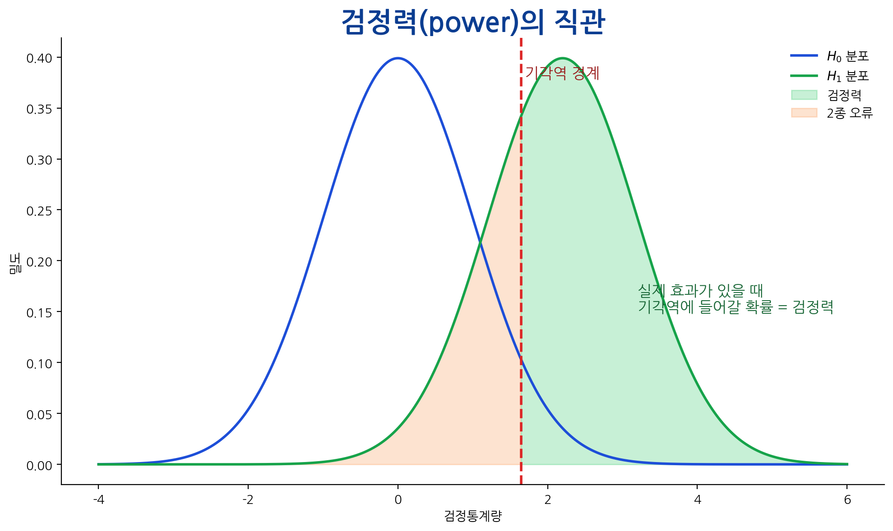
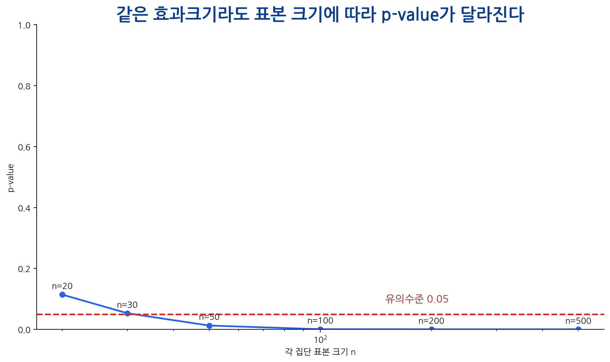
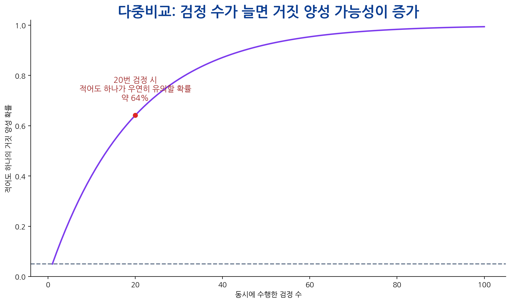

수업 개요
이번 장에서는 통계적 추론의 핵심 도구인 가설검정(hypothesis testing) 을 학습한다.
의학 연구에서 연구자는 다음과 같은 질문을 자주 만난다.
신약은 기존 치료보다 혈압을 더 낮추는가?
새로운 검사법의 양성률은 기존 검사법과 다른가?
흡연군과 비흡연군의 폐암 발생률은 차이가 있는가?
치료 전후 평균 검사 수치가 실제로 변했는가?
관찰된 평균 차이가 우연으로 설명될 수 있는가?
이 질문들에는 공통점이 있다.
가설검정은 바로 이 문제를 다룬다.
가설검정은 표본에서 관찰된 차이나 관련성이 우연한 표본변동만으로 설명될 수 있는지 평가하는 절차이다.

핵심 질문
이번 수업은 다음 질문을 중심으로 진행된다.
귀무가설과 대립가설은 무엇인가?
p-value는 정확히 무엇을 의미하는가?
p-value가 작다는 것은 어떤 의미인가?
p-value가 크면 “효과가 없다”고 말해도 되는가?
유의수준 \(\alpha\) 는 무엇을 의미하는가?
1종 오류와 2종 오류는 어떻게 다른가?
검정력은 왜 중요한가?
표본 크기가 커지면 p-value는 왜 작아질 수 있는가?
통계적 유의성과 임상적 중요성은 왜 구분해야 하는가?
다중비교와 p-hacking은 왜 위험한가?
학습목표
이번 장을 마치면 학생들은 다음을 할 수 있어야 한다.
가설검정의 목적과 기본 논리를 설명할 수 있다.
귀무가설과 대립가설을 연구질문에 맞게 설정할 수 있다.
양측검정과 단측검정을 구분할 수 있다.
검정통계량의 의미를 설명할 수 있다.
p-value를 올바르게 해석할 수 있다.
p-value의 흔한 오해를 피할 수 있다.
유의수준, 기각역, 통계적 유의성을 설명할 수 있다.
1종 오류, 2종 오류, 검정력의 관계를 설명할 수 있다.
효과크기와 신뢰구간을 함께 해석할 수 있다.
R을 이용하여 기본적인 t-test를 수행하고 결과를 해석할 수 있다.
수업을 관통하는 예제
이번 장에서는 다음 예제를 반복적으로 사용한다.
어떤 연구자가 새로운 항고혈압제가 기존 치료보다 수축기 혈압을 더 낮추는지 평가하고자 한다.
대조군
126 mmHg
10 mmHg
30
치료군
120 mmHg
10 mmHg
30
표본에서는 치료군의 평균 혈압이 대조군보다 6 mmHg 낮다.
가설검정은 다음 질문에 답하고자 한다.
실제로 두 치료의 평균 효과가 같다고 가정할 때, 이 정도 또는 더 큰 평균 차이가 우연히 관찰될 가능성은 얼마나 되는가?
가설검정이란?
가설검정은 표본자료를 이용하여 모집단에 대한 주장을 평가하는 방법이다.
예를 들어 두 치료군의 평균 혈압을 비교할 때 관심 있는 모수는 두 집단의 모평균이다.
\[\mu_1 = \text{대조군의 평균 혈압}\]
\[\mu_2 = \text{치료군의 평균 혈압}\]
연구자는 보통 다음과 같은 질문을 한다.
\[\mu_1 = \mu_2 \quad \text{인가?}\]
또는
\[\mu_1 \neq \mu_2 \quad \text{인가?}\]
표본에서 두 평균이 다르게 나왔다고 해서 곧바로 모집단 평균도 다르다고 말할 수는 없다.
따라서 가설검정의 핵심 질문은 다음과 같다.
귀무가설이 참이라고 가정했을 때, 현재 표본에서 관찰된 결과가 얼마나 드문가?
이 질문에 대한 수치적 답이 p-value이다.
귀무가설과 대립가설
귀무가설
귀무가설(null hypothesis)은 보통 “차이가 없다”, “효과가 없다”, “관련성이 없다”는 가설이다.\(H_0\) 라고 쓴다.
두 집단 평균 비교에서 귀무가설은 다음과 같다.
\[H_0: \mu_1 = \mu_2\]
또는 평균 차이를 이용하여 다음과 같이 쓸 수도 있다.
\[H_0: \mu_1 - \mu_2 = 0\]
귀무가설은 연구자가 반드시 믿고 싶은 가설이라기보다, 통계검정에서 기준점으로 삼는 가설이다.
가설검정은 일단 귀무가설이 참이라고 가정한 뒤, 관찰된 자료가 그 가정과 얼마나 양립 가능한지 평가한다.
대립가설
대립가설(alternative hypothesis)은 귀무가설과 반대되는 가설이며, 연구자가 증거를 찾고자 하는 방향을 표현한다.\(H_1\) 또는 \(H_A\) 라고 쓴다.
두 집단 평균이 다르다는 양측 대립가설은 다음과 같다.
\[H_1: \mu_1 \neq \mu_2\]
치료군 평균 혈압이 대조군보다 낮다는 단측 대립가설은 다음과 같이 쓸 수 있다.
\[H_1: \mu_2 < \mu_1\]
가설은 자료를 본 뒤 정하는 것이 아니라, 연구 질문과 연구 설계 단계에서 미리 정해야 한다.
가설 설정 예제
연구질문에 따라 귀무가설과 대립가설은 달라진다.
두 약의 평균 혈압 강하 효과가 다른가?
\(\mu_1=\mu_2\) \(\mu_1 \neq \mu_2\)
신약이 기존 약보다 평균 혈압을 더 낮추는가?
\(\mu_{\text{new}} \geq \mu_{\text{old}}\) \(\mu_{\text{new}} < \mu_{\text{old}}\)
흡연 여부와 폐암 발생이 관련 있는가?
두 변수는 독립이다
두 변수는 관련 있다
치료 전후 평균 혈당이 변했는가?
\(\mu_d=0\) \(\mu_d \neq 0\)
새로운 검사법의 민감도가 90%보다 높은가?
\(p \leq 0.90\) \(p > 0.90\)
여기서 \(\mu_d\) 는 치료 후 값에서 치료 전 값을 뺀 차이의 평균이다.
양측검정과 단측검정
양측검정
양측검정(two-sided test)은 차이가 어느 방향으로든 존재할 가능성을 고려한다.
\[H_1: \mu_1 \neq \mu_2\]
예를 들어 신약이 기존 치료보다 좋을 수도 있고 나쁠 수도 있다면 양측검정을 사용한다.
양측검정은 다음 상황에서 적절하다.
효과의 방향을 사전에 확신하기 어렵다.
어느 방향의 차이든 임상적으로 중요하다.
논문 보고에서 보수적인 접근을 취하고 싶다.
대부분의 의학 연구에서 기본 선택으로 사용된다.
단측검정
단측검정(one-sided test)은 특정 방향의 차이만 고려한다.
예를 들어 신약이 기존 치료보다 혈압을 더 낮추는지만 관심이 있다면 다음과 같이 설정할 수 있다.
\[H_1: \mu_{\text{new}} < \mu_{\text{old}}\]
단측검정은 양측검정보다 같은 자료에서 p-value가 작아질 수 있다.
단측검정을 사용하려면 다음 조건이 필요하다.
연구 시작 전 방향이 명확히 정해져 있어야 한다.
반대 방향의 결과는 과학적으로 또는 임상적으로 관심이 없어야 한다.
분석 후 유의성을 얻기 위해 방향을 바꾸면 안 된다.
의학 연구에서는 대체로 양측검정을 기본으로 사용하는 것이 안전하다.
가설검정의 기본 절차
가설검정은 보통 다음 순서로 진행된다.
연구질문을 명확히 한다.
귀무가설과 대립가설을 설정한다.
유의수준 \(\alpha\) 를 정한다.
자료 유형과 연구설계에 맞는 검정 방법을 선택한다.
검정통계량을 계산한다.
p-value를 계산한다.
p-value와 유의수준을 비교한다.
효과크기와 신뢰구간을 함께 해석한다.
통계적 결론과 임상적 결론을 구분하여 보고한다.
실제 연구에서는 p-value 하나만 보고 결론을 내리지 않는다.
검정통계량
검정통계량(test statistic)은 관찰된 자료가 귀무가설에서 기대되는 값으로부터 얼마나 떨어져 있는지를 수치화한 값이다.
대부분의 검정통계량은 다음 구조를 가진다.
\[\text{검정통계량}
=
\frac{
\text{관찰된 값} - \text{귀무가설에서 기대되는 값}
}{
\text{표준오차}
}\]
두 집단 평균 차이를 비교할 때는 다음과 같은 형태가 된다.
\[t
=
\frac{
(\bar{X}_1-\bar{X}_2)-0
}{
SE(\bar{X}_1-\bar{X}_2)
}\]
여기서 0은 귀무가설에서 기대되는 평균 차이이다.
검정통계량의 절댓값이 클수록 관찰된 자료가 귀무가설과 멀리 떨어져 있다는 의미이다.
p-value의 정의
p-value는 다음과 같이 정의된다.
귀무가설이 참이라고 가정했을 때, 현재 관찰된 결과 또는 그보다 더 극단적인 결과가 나올 확률.
수식으로는 양측검정에서 다음과 같이 표현할 수 있다.
\[p\text{-value}
=
P(|T| \geq |t_{\text{obs}}| \mid H_0)\]
여기서
\(T\) 는 귀무가설 하에서의 검정통계량이다.\(t_{\text{obs}}\) 는 실제 자료에서 관찰된 검정통계량이다.\(|T| \geq |t_{\text{obs}}|\) 는 현재 관찰값만큼 또는 그보다 더 극단적인 결과를 의미한다.

p-value가 작다는 것은 귀무가설이 참이라는 가정 아래에서 현재 자료가 드물게 관찰된다는 뜻이다.
p-value 예제
두 치료법의 평균 혈압을 비교한 결과 다음이 나왔다고 하자.
평균 차이
5.2 mmHg
95% 신뢰구간
2.1 to 8.3 mmHg
p-value
0.002
이 결과는 다음과 같이 해석한다.
실제로 두 치료법의 평균 효과가 같다고 가정하면, 현재 관찰된 정도 또는 그보다 더 큰 평균 차이가 우연히 관찰될 확률은 약 0.2%이다.
따라서 일반적인 유의수준 0.05에서는 귀무가설을 기각한다.
유의수준
유의수준(significance level)은 귀무가설이 참일 때 귀무가설을 잘못 기각할 최대 허용 확률이다.\(\alpha\) 를 사용한다.
의학 연구에서는 흔히 다음 값을 사용한다.
\[\alpha = 0.05\]
이는 “귀무가설이 참인데도 우연히 유의하다고 판단할 확률을 5%로 제한하겠다”는 의미이다.
유의수준은 자료를 본 뒤 정하는 값이 아니다.
p-value와 유의수준 비교
p-value와 유의수준을 비교하여 통계적 결론을 내린다.
\(p < \alpha\) 귀무가설 기각
통계적으로 유의함
\(p \geq \alpha\) 귀무가설을 기각하지 못함
통계적으로 유의하지 않음
주의할 점은 “귀무가설을 기각하지 못함”이 “귀무가설이 참임을 증명함”과 다르다는 것이다.
예를 들어 \(p=0.12\) 라면 다음과 같이 말해야 한다.
유의수준 0.05에서 통계적으로 유의한 차이를 보이지 않았다.
다음과 같이 말하면 안 된다.
두 집단은 동일하다.
유의하지 않은 결과는 효과가 없기 때문일 수도 있지만, 표본 크기가 작거나 변동성이 커서 효과를 발견할 힘이 부족했기 때문일 수도 있다.
p-value의 흔한 오해
p-value는 매우 자주 오해된다. 다음 해석은 모두 잘못된 해석이다.
p-value는 귀무가설이 참일 확률이다
p-value는 \(P(H_0 \mid data)\) 가 아니라 \(P(data \mid H_0)\) 이다
p-value가 작을수록 효과크기가 크다
표본 크기가 크면 작은 효과도 작은 p-value를 가질 수 있다
p=0.049는 효과가 있고 p=0.051은 효과가 없다
두 값은 실질적으로 거의 비슷하다
p<0.05이면 임상적으로 중요하다
통계적 유의성과 임상적 중요성은 다르다
p≥0.05이면 효과가 없다
효과가 없다는 증거가 아니라, 충분한 증거를 찾지 못했다는 의미일 수 있다
p-value는 결과가 우연일 확률이다
정확히는 귀무가설 하에서 현재 또는 더 극단적 자료가 나올 확률이다
특히 다음 차이는 매우 중요하다.
\[P(\text{data} \mid H_0)
\neq
P(H_0 \mid \text{data})\]
p-value는 왼쪽의 확률과 관련되어 있다.
통계적 유의성과 임상적 중요성
통계적으로 유의하다는 것은 귀무가설과 자료 사이의 불일치가 충분히 크다는 뜻이다.
예를 들어 표본 크기가 매우 큰 연구에서 다음 결과가 나왔다고 하자.
평균 혈압 차이
0.5 mmHg
p-value
< 0.001
이 결과는 통계적으로 유의할 수 있다.
반대로 다음 결과를 보자.
평균 생존기간 차이
6개월
p-value
0.07
이 결과는 유의수준 0.05에서는 통계적으로 유의하지 않다.

신뢰구간과 가설검정의 관계
신뢰구간과 가설검정은 서로 밀접하게 연결되어 있다.
두 집단 평균 차이에 대한 95% 신뢰구간이 귀무값 0을 포함하지 않으면, 대개 양측검정에서 \(p<0.05\) 가 된다.
2.1 to 8.3
포함하지 않음
통계적으로 유의
-1.2 to 6.4
포함함
통계적으로 유의하지 않음
예를 들어 평균 차이의 95% 신뢰구간이 다음과 같다면,
\[2.1 \leq \mu_1-\mu_2 \leq 8.3\]
이 구간은 0을 포함하지 않는다.
반대로 신뢰구간이 다음과 같다면,
\[-1.2 \leq \mu_1-\mu_2 \leq 6.4\]
0을 포함하므로 차이가 없다는 가능성을 배제하기 어렵다.
신뢰구간은 p-value보다 더 많은 정보를 제공한다.
1종 오류
1종 오류(Type I error)는 실제로 귀무가설이 참인데 귀무가설을 기각하는 오류이다.
즉 실제로 효과가 없는데 효과가 있다고 결론 내리는 오류이다.
예를 들어 실제로 효과가 없는 약을 효과 있다고 판단하면 1종 오류이다.
1종 오류의 확률은 유의수준 \(\alpha\) 와 같다.
\[P(\text{1종 오류}) = \alpha\]
보통 \(\alpha=0.05\) 를 사용한다면, 귀무가설이 참일 때 약 5%의 확률로 잘못 기각할 수 있음을 허용하는 것이다.
2종 오류
2종 오류(Type II error)는 실제로 귀무가설이 거짓인데 귀무가설을 기각하지 못하는 오류이다.
즉 실제로 효과가 있는데 효과를 발견하지 못하는 오류이다.
예를 들어 실제로 효과가 있는 약을 효과 없다고 판단하면 2종 오류이다.
2종 오류의 확률은 \(\beta\) 로 표시한다.
\[P(\text{2종 오류}) = \beta\]
1종 오류와 2종 오류는 서로 다른 방향의 오류이다.

검정력
검정력(power)은 실제 효과가 있을 때 귀무가설을 기각할 확률이다.
\[\text{Power}=1-\beta\]
검정력이 높다는 것은 실제 효과가 있을 때 그 효과를 발견할 가능성이 높다는 뜻이다.
\[\text{Power}=0.80\]
라는 것은 실제로 연구자가 관심 있는 크기의 효과가 존재할 때, 그 효과를 통계적으로 유의하게 발견할 확률이 80%라는 뜻이다.

검정력에 영향을 주는 요소
검정력은 여러 요소의 영향을 받는다.
표본 크기 증가
검정력 증가
효과크기 증가
검정력 증가
자료의 변동성 감소
검정력 증가
유의수준 \(\alpha\) 증가
검정력 증가하지만 1종 오류 증가
측정오차 감소
검정력 증가
적절한 연구설계
검정력 증가
표본 크기
표본 크기가 커지면 표준오차가 작아진다.
두 독립집단 평균 차이의 표준오차는 대략 다음과 같다.
\[SE(\bar{X}_1-\bar{X}_2)
=
\sqrt{
\frac{\sigma_1^2}{n_1}
+
\frac{\sigma_2^2}{n_2}
}\]
표본 크기 \(n_1\) , \(n_2\) 가 커질수록 표준오차가 작아지고, 같은 평균 차이라도 검정통계량은 커질 수 있다.
효과크기
효과가 클수록 귀무가설과 실제 분포 사이의 간격이 커진다.
변동성
자료의 변동성이 크면 같은 평균 차이를 관찰해도 표준오차가 커진다.
표본 크기와 p-value
p-value는 효과크기뿐 아니라 표본 크기의 영향을 강하게 받는다.
같은 평균 차이가 있더라도 표본 크기가 커지면 표준오차가 작아진다.
\[t
=
\frac{\text{평균 차이}}{\text{표준오차}}\]
표준오차가 작아지면 \(t\) 값이 커지고 p-value는 작아진다.
따라서 큰 표본에서는 임상적으로 매우 작은 차이도 통계적으로 유의할 수 있다.

다중비교 문제
여러 가설검정을 동시에 수행하면 우연히 유의한 결과가 나올 가능성이 증가한다.
각 검정에서 유의수준을 0.05로 설정했다고 하자.
\[1-0.05 = 0.95\]
\(m\) 번의 검정에서 모두 유의하지 않을 확률은 다음과 같다.
\[0.95^m\]
따라서 적어도 하나가 우연히 유의할 확률은 다음과 같다.
\[1-0.95^m\]
예를 들어 20개의 가설검정을 수행하면,
\[1-0.95^{20}
\approx 0.64\]
즉 실제 효과가 전혀 없어도 적어도 하나가 유의하게 나올 확률은 약 64%가 된다.

이 때문에 여러 검정을 수행하는 연구에서는 다중비교 보정이 필요할 수 있다.
p-hacking과 선택적 보고
p-hacking은 원하는 p-value가 나올 때까지 분석 방법을 반복적으로 바꾸거나 결과를 선택적으로 보고하는 행위이다.
예를 들어 다음과 같은 행동이 p-hacking에 해당할 수 있다.
여러 변수 중 유의한 변수만 보고한다.
여러 하위집단 분석 중 유의한 결과만 보고한다.
유의한 결과가 나올 때까지 공변량을 바꿔가며 분석한다.
결과를 본 뒤 단측검정으로 바꾼다.
중간분석을 반복하면서 유의한 순간 연구를 중단한다.
이상치 제거 기준을 결과에 맞추어 바꾼다.
p-hacking은 재현성 위기의 중요한 원인이다.
가설검정 방법 선택
가설검정 방법은 자료 유형과 연구설계에 따라 달라진다.
한 집단 평균이 기준값과 다른가?
연속형
한 표본
one-sample t-test
두 독립집단 평균 비교
연속형
독립집단
independent t-test
치료 전후 평균 비교
연속형
짝지어진 자료
paired t-test
세 집단 이상 평균 비교
연속형
독립집단
ANOVA
두 범주형 변수 관련성
범주형
독립 표본
chi-square test
작은 표본의 2×2 표
범주형
독립 표본
Fisher’s exact test
두 비율 비교
이항형
독립집단
two-proportion test
정규성 가정이 어려운 두 집단 비교
순위/비정규 연속형
독립집단
Wilcoxon rank-sum test
검정 방법을 선택할 때는 “어떤 p-value를 얻을까?”보다 다음 질문이 먼저이다.
연구질문은 무엇인가?
결과 변수의 유형은 무엇인가?
비교하는 집단은 독립인가, 짝지어진 자료인가?
표본 크기는 충분한가?
검정의 가정은 어느 정도 만족되는가?
R 실습 준비
이번 실습에서는 두 집단의 평균 혈압을 비교한다.
set.seed (123 )<- rnorm (30 , mean = 126 , sd = 10 )<- rnorm (30 , mean = 120 , sd = 10 )<- data.frame (group = rep (c ("Control" , "Treatment" ), each = 30 ),sbp = c (control, treatment)head (bp_data)
group sbp
1 Control 120.3952
2 Control 123.6982
3 Control 141.5871
4 Control 126.7051
5 Control 127.2929
6 Control 143.1506
R 실습: 기술통계 확인
가설검정을 하기 전에 먼저 자료를 요약한다.
tapply (bp_data$ sbp, bp_data$ group, mean)
Control Treatment
125.5290 121.7834
tapply (bp_data$ sbp, bp_data$ group, sd)
Control Treatment
9.810307 8.351279
tapply (bp_data$ sbp, bp_data$ group, length)
평균 차이를 직접 계산할 수도 있다.
mean (control) - mean (treatment)
검정 전에 평균, 표준편차, 표본 크기, 이상치, 분포 형태를 확인하는 습관이 중요하다.
R 실습: 시각화
boxplot (~ group,data = bp_data,xlab = "Group" ,ylab = "Systolic blood pressure" ,main = "Blood pressure comparison"
시각화는 p-value만으로는 알 수 없는 정보를 제공한다.
집단 간 차이의 방향
자료의 변동성
이상치 여부
분포의 대략적인 형태
R 실습: 독립표본 t-test
두 독립집단의 평균을 비교하기 위해 t.test()를 사용한다.
<- t.test (sbp ~ group, data = bp_data)
Welch Two Sample t-test
data: sbp by group
t = 1.5924, df = 56.559, p-value = 0.1169
alternative hypothesis: true difference in means between group Control and group Treatment is not equal to 0
95 percent confidence interval:
-0.9654261 8.4565843
sample estimates:
mean in group Control mean in group Treatment
125.5290 121.7834
출력에서 확인해야 할 핵심 항목은 다음과 같다.
t
검정통계량
df
자유도
p-value
귀무가설 하에서 현재 또는 더 극단적인 결과의 확률
confidence interval
평균 차이에 대한 신뢰구간
sample estimates
각 집단의 표본평균
p-value만 보지 말고 신뢰구간과 표본평균도 함께 확인해야 한다.
R 실습: p-value와 신뢰구간 추출
[1] -0.9654261 8.4565843
attr(,"conf.level")
[1] 0.95
mean in group Control mean in group Treatment
125.5290 121.7834
결과 보고는 다음과 같이 할 수 있다.
두 집단의 평균 수축기 혈압을 비교한 결과, 평균 차이는 약 -3.75 mmHg였으며, p-value는 0.117이었다.
단, 실제 논문에서는 집단 순서와 차이의 방향을 명확히 확인한 뒤 문장을 작성해야 한다.
R 실습: 표본 크기에 따른 p-value 변화
같은 평균 차이라도 표본 크기가 달라지면 p-value가 달라질 수 있다.
set.seed (123 )<- rnorm (10 , mean = 126 , sd = 10 )<- rnorm (10 , mean = 120 , sd = 10 )<- rnorm (200 , mean = 126 , sd = 10 )<- rnorm (200 , mean = 120 , sd = 10 )t.test (small_control, small_treatment)$ p.valuet.test (large_control, large_treatment)$ p.value
이 실습은 p-value가 효과크기만의 함수가 아니라 표본 크기와 변동성에도 영향을 받는다는 점을 보여준다.
R 실습: 1종 오류 시뮬레이션
이번에는 실제로 두 집단 평균이 같은 상황을 시뮬레이션한다.
set.seed (123 )<- 1000 <- replicate (<- rnorm (30 , mean = 100 , sd = 10 )<- rnorm (30 , mean = 100 , sd = 10 )t.test (x, y)$ p.valuemean (p_values < 0.05 )
두 집단의 실제 평균이 같더라도, 유의수준 0.05를 사용하면 약 5% 정도는 우연히 유의한 결과가 나온다.
p-value의 분포를 히스토그램으로 확인할 수 있다.
hist (breaks = 20 ,main = "P-values under the null hypothesis" ,xlab = "p-value" abline (v = 0.05 , lwd = 2 , lty = 2 )
귀무가설이 참이면 p-value는 대체로 0과 1 사이에 고르게 분포한다.
R 실습: 검정력 시뮬레이션
이번에는 실제 평균 차이가 존재하는 상황을 시뮬레이션한다.
set.seed (123 )<- 1000 <- replicate (<- rnorm (30 , mean = 100 , sd = 10 )<- rnorm (30 , mean = 106 , sd = 10 )t.test (x, y)$ p.valuemean (p_values_alt < 0.05 )
이 값은 표본 크기 30명씩, 평균 차이 6, 표준편차 10인 상황에서의 경험적 검정력에 해당한다.
표본 크기를 늘려 비교해 보자.
set.seed (123 )<- sapply (c (10 , 20 , 30 , 50 , 100 ),function (n) {<- replicate (1000 ,<- rnorm (n, mean = 100 , sd = 10 )<- rnorm (n, mean = 106 , sd = 10 )t.test (x, y)$ p.valuemean (p_values < 0.05 )
[1] 0.239 0.439 0.635 0.843 0.987
plot (c (10 , 20 , 30 , 50 , 100 ),type = "b" ,xlab = "Sample size per group" ,ylab = "Empirical power" ,main = "Power increases with sample size" ,ylim = c (0 , 1 )abline (h = 0.8 , lty = 2 , lwd = 2 )
R 실습: 다중비교 시뮬레이션
실제 효과가 전혀 없는 20개의 검정을 반복하면 어떻게 될까?
set.seed (123 )<- 1000 <- replicate (<- replicate (20 ,<- rnorm (30 , mean = 100 , sd = 10 )<- rnorm (30 , mean = 100 , sd = 10 )t.test (x, y)$ p.valueany (p_values < 0.05 )mean (any_significant)
실제 차이가 없어도 여러 번 검정하면 적어도 하나는 유의하게 나올 가능성이 상당히 커진다.